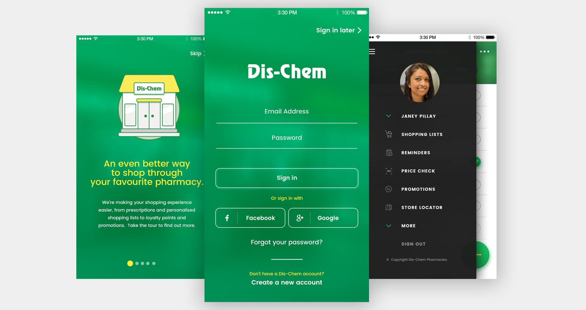
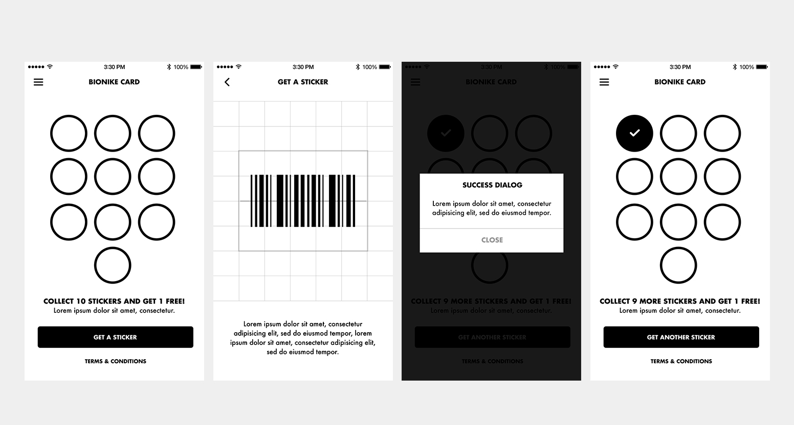
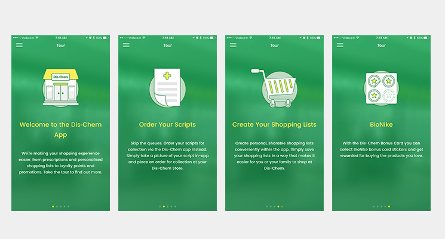

Brief and problem statement
Due to Dis-Chem being South Africa’s pharmacy leader, having an aesthetically pleasing but intuitive user experience was paramount.

Goals and requirements
The goal was to develop an app that not only looked good but fulfilled a good number of use cases, in as efficient a way as possible. We wanted to give users something that could reduce their time spent in stores, on the Website, or contacting the stores via telephone
An important part of the process was determining user requirements, as well as the intricacies regarding developing the apps within Dis-Chem’s own infrastructure with all its complexity.

My role
I was the UX / UI Designer on the project. I took care of translating requirements, wireframing screens, designing the layout and working closely with the development team to make sure the App was developed to a high standard.
Wireframes
The “how” was more important than the “what” at the onset. The features that make the app so innovative include the built-in shopping list; the ability to redeem loyalty points on a digital card programme; reminders to take medication, as well as a digital rewards card. Above all this, the most ground-breaking feature is the ability to order medical scripts in-app, which are sent directly to the selected store for preparation and collection.
The final design
Finding a solution that took all the spokes of the Dis-Chem wheel into account with regards to integrating their multitude of services into a smartphone app, we fully invested ourselves into designing the app with Dis-Chem’s corporate identity in mind and refining the usability and functionality in the app to get it to the eagerly-waiting public. The Dis-Chem app has garnered over 100 000 organic installs across device to date. The Dis-Chem app is an industry leader because it understands the needs of its users and exists to bring convenience and ease to their lives. The app places their favourite pharmacy right in the palm of their hands, and only gets becomes more convenient & personalised with each update.
Details
Client Dis-Chem Pharmacy.
Services UI, UX, App design, Development
Category App Design
Year 2017